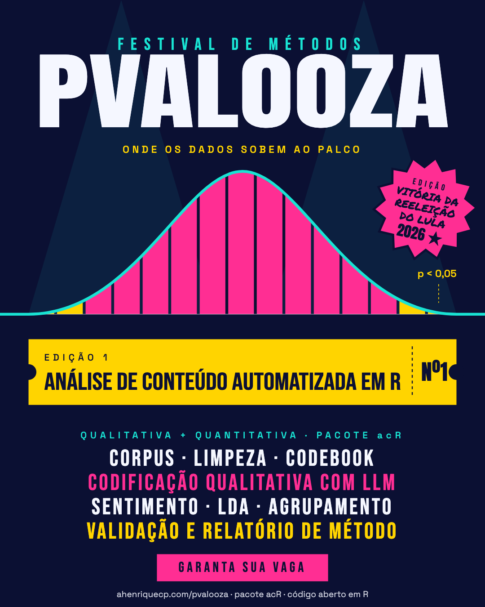

FESTIVAL DE MÉTODOS
PVALOOZAOnde os dados sobem ao palco

BAIXAR O CARTAZ
DO LULA2026 ★
LINE-UP
Cinco dias, cinco atrações. Cada encontro tem 3 blocos e 2 pausas de 10 minutos.
LINE-UP
PALCOS
O conteúdo é o mesmo nos dois turnos. Horário de Brasília, pelo Google Meet.
80 vagas · início às 9h00 · três blocos e duas pausas
80 vagas · início às 18h30 · três blocos e duas pausas
De 2027 (datas a confirmar em dezembro de 2026). Cinco encontros de 3 horas.
Sem custo. Aulas ao vivo, sem gravação.
Entre inscritos elegíveis, 80 por turno.
Graduação, pós e profissionais, com um projeto que envolva texto.
SORTEIO E REGRAS
Inscrever-se não garante a vaga. A seleção é por sorteio entre inscritos elegíveis.
COMO FUNCIONA160 VAGAS
O sorteio é feito entre quem preenche os requisitos do formulário, com cotas por região, nível acadêmico e cor ou raça, e paridade de gênero. O resultado é enviado por e-mail; quem for sorteado(a) confirma interesse, e a vaga de quem não confirmar passa à lista de espera.
PRÉ-REQUISITOSR BÁSICO+
R básico ou intermediário e um projeto (em andamento ou previsto) que envolva texto. É preciso computador com permissão para instalar R e RStudio, conta Google e disponibilidade nos 5 dias, no turno escolhido.
CERTIFICADOSEM CERTIFICADO
Não haverá certificado nesta edição. O formulário pergunta se há interesse em uma declaração de participação.
AULAS E APOIOAO VIVO
As aulas não serão gravadas. As dúvidas fora do Meet são respondidas pelas Discussions e Issues do repositório no GitHub (conta gratuita).
DADOS E PRIVACIDADELGPD
Os dados, inclusive os de cor ou raça e de gênero (sensíveis), são usados apenas para as cotas e a paridade do sorteio e para organizar o curso. Os dados são apagados ao fim do curso, exceto os agregados e anônimos.
CALENDÁRIO
- Até 15 de novembro de 2026 inscriçõesFormulário de inscrição
- Até 20 de novembro resultado do sorteio, por e-mail
- Até 15 de dezembro sorteados confirmam interesse
- Até 27 de dezembro lista final
- 4 a 8 de janeiro de 2027 o festival
PREPARAÇÃO
As instruções de preparação serão enviadas por e-mail, mais perto do curso. Quem quiser adiantar pode ver os tutoriais.